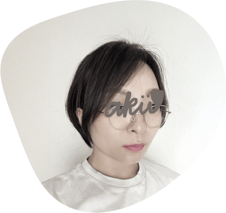

ウミイロデザイン
楢原 亜季
Aki Narahara
- すむところ
埼玉県深谷市在住
- しごと
IT企業の在宅ワーカー
兼シンママ - 前のしごと
TOEIC660点
日商簿記検定3級（2級も勉強中）
整理収納アドバイザー検定3級 - しかく
株式会社良品計画に8年間兼務
無印良品の店長、改装などを経験 - しゅみ
Youtubeを観ること、ドラマを観ること
子どもと遊ぶこと - すきなこと
TOKYO MERの大ファン
ケツメイシのファン歴20年
お酒
ディズニー - つかえるソフト
Google Workplace、Microsoft Office
Zoom、Google meet、Teams、Slack
ChatWork、NotebookLM
Adobe＊Photoshop、Illustrator、Acrobat
Canva、VScode、Github
ChatGPT、Gemini、ClaudeAI、gamma